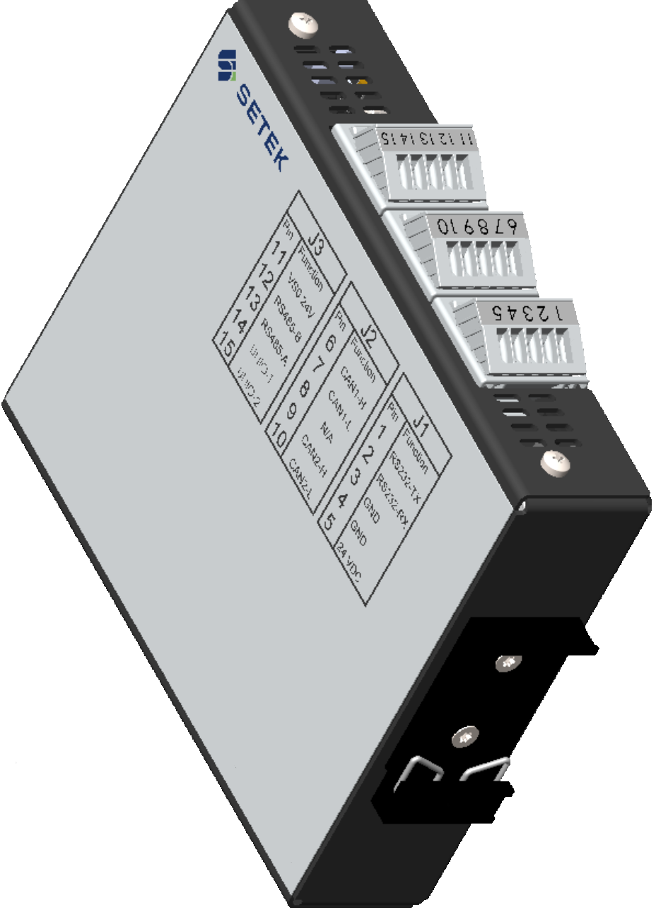

Platform Host Monitor Mini

Abstract⚓︎
The Host Monitor Mini is an industrial Linux-based edge-computing device in a DIN-rail mountable enclosure.
Features lists⚓︎
Common features for HM020⚓︎
| Feature | Description |
|---|---|
| Housing | galvanized metal, 110(117)x134(153)x32mm (in parenthesis connector front to back din-rail clip) |
| Operating Temperature | -5C to +65C |
| Nominal Voltage | 24V |
| Nominal Current consumtion | less than 3W |
| Operating System | Yocto Scarthgap, Linux kernel 6.6 |
| Protection | IP20 |
| Low power mode | Suspend to RAM. |
Feature summary for HM020-100W11⚓︎
This product is shipped with a custom distribution/BSP and an application called Liam.
| Feature | Description |
|---|---|
| CPU | Texas Instruments AM625 Solo 1.4 GHz A53 (64 bit) with Cortex M4F 400 MHz co-processor |
| RAM | 512 MB DDR4 |
| Internal Storage | 4 GB eMMC |
| Ethernet | 1 x 100/1000 Base-T |
| GPS | Included in modem, external antenna |
| LEDs | 4 x red+green (yellow in combination) |
| Modem | Quectel EG21 GL |
| Real Time Clock | No battery mounted; please use network time |
| RS-232 | 1 x RS-232 bus |
| SIM | nanoSIM, hot-swap |
| USB | USB 2.0 OTG type C |
| WIFI | 802.11 b/g/n WiFi |
Feature summary for HM020-000W21⚓︎
This version of the product is shipped with a custom distribution BSP as a reference OS.
| Feature | Description |
|---|---|
| CPU | Texas Instruments AM625 Solo 1.4 GHz A53 (64 bit) with Cortex M4F 400 MHz co-processor |
| RAM | 512 MB DDR4 |
| Internal Storage | 4 GB eMMC |
| CAN | 2 x CAN-FD |
| Ethernet | 1 x 100/1000 Base-T |
| GPS | Included in modem, external antenna connector (SMA) |
| HSM | Hardware security module |
| LEDs | 4 x red+green (yellow in combination) |
| Modem | Quectel EG21 GL |
| Real Time Clock | System time keeper and wakeup, power backed up by BR1220 coin cell battery |
| RS-232 | 1 x RS-232 bus |
| RS-485 | 1 x RS-485 bus |
| SIM | nanoSIM, hot-swap |
| USB | USB 2.0 OTG type C |
| Universal I/O | with individual modes |
| WIFI | 802.11 b/g/n WiFi* |
Feature(s) on request⚓︎
See Production Variant Definition if your variant is already a product available for sale.
| Feature | Summary | Mounted/Optional |
|---|---|---|
| CPU | TI AM625 1.4 GHz A53 (64-bit) with Cortex M4 400MHz co-processor | Solo / Optional dual or quad |
| RAM | 512 MB DDR4 | - / 1GB or 2GB option |
| Internal Storage | 4 GB eMMC | - / 4GB to 16GB |
| External Storage | µSD Card | Optional / - |
| Interface | Description | Mounted/Optional |
|---|---|---|
| Bluetooth | Bluetooth Low Energy 5.2* | Optional / Wi-Fi |
| CAN | 2 x CAN-FD | Optional / - |
| Ethernet | 1 x 100/1000 Base-T | Always / - |
| GPS | Included in modem, external antenna | Always / - |
| HSM | Hardware security module | Optional / - |
| LEDs | 4 x red+green (yellow in combination) | Always / - |
| Real Time Clock | System time keeper and wakeup | Optional / Optional power-backed by BR1220 coin cell battery |
| RS-232 | 1 x RS-232 bus | Always / - |
| RS-485 | 1 x RS-485 bus | Optional / - |
| SIM | NanoSIM, hot-swap | Always / - |
| USB | USB 2.0 OTG Type-C | Always / - |
| Universal I/O | With individual modes | Optional / - |
| WIFI | 802.11 b/g/n WiFi* | Optional / Bluetooth |
- *You can only choose either BLE or WiFi as there is only one SMA connector in this design.
Production variant definition⚓︎
The product part numbers start with HM020-*****-revision, read from right to left.
Processor module⚓︎
Position in field: xxxxxX
| Processor ID | Module Part Number | Additional Details |
|---|---|---|
| 0 | No module | |
| 1 | hMOD0014 (Arena) | Verdin AM62 Solo 512MB WB (WiFi) IT |
| 2 | - | Verdin AM62 Dual 1GB WB IT |
| 3 | - | Verdin AM62 Dual 1GB WB IT |
| 4 | - | Verdin AM62 Quad 2GB WB IT |
PCBA Variant⚓︎
Position in field: xxxxXx
| Variant ID | PCBA Variant |
|---|---|
| 1 | HMP1031-11 |
| 2 | HMP1031-16 |
WiFi or BLE features⚓︎
Position in field: xxxXxx
| Variant ID | Feature WiFi/BLE |
|---|---|
| W | WiFi |
| B | Blutooth |
SD-Card⚓︎
Position in field: xxXxxx
| Variant ID | SD-Card receptacle | Additional Details |
|---|---|---|
| 0 | Not fitted | No mass-storage option |
SIM Card⚓︎
Position in field: xXxxxx
| Variant ID | Nano-SIM Card | Additional Details |
|---|---|---|
| 0 | Not fitted | No SIM card included |
Custom BSP/OS⚓︎
Position in field: Xxxxxx
This is for customers that want extra installation of software, additional labels or similar within design limitations.
| Customer ID | Customer Tweaks | Description |
|---|---|---|
| 0 | Default | No customization, only delivered with our reference BSP |
| 1 | Reserved for customer using the Liam application and a custom BSP | |
| n | - |
List of known products⚓︎
| Products | Product part number | Description |
|---|---|---|
| Default | HM020-000W21 | Only delivered with our reference BSP |
| HM020-100W11 | Reserved for customer using the Liam application |
Note: For SETEK employees, update this page after making changes to the internal document 900126-HM Mini Variant definitions and encoding.
Connectors and buttons (PCBA Variant 1)⚓︎
Connectors and buttons (PCBA Variant 2)⚓︎
Technical specification⚓︎
Please contact support to receive a detailed technical specification for this hardware.